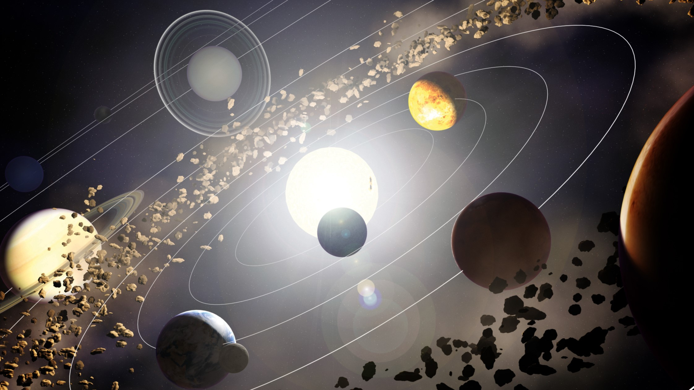

- Solar System Home
Our Solar System
Our Solar System contains the Sun, 8 planets, and lots of smaller objects. It formed 4,500 million years ago. It is on an outer spiral arm of the Milky Way galaxy.
| Our Solar System | ||||||
|---|---|---|---|---|---|---|
| Tempurature | Radius | Mass | Year Length | Day Length | Number of Moons | |
| (Celsius) | (Kilometers) | (Earth Masses) | (Earth Days) | (Earth Days) | ||
| Mercury | -200 to 400 | 2,440 | 0.055 | 88 | 176 | 0 |
| Venus | 460 | 6,054 | 0.82 | 225 | 117 | 0 |
| Earth | -80 to 50 | 6,378 | 1 | 365.25 | 1 | 1 |
| Mars | -150 to 20 | 3,397 | 0.11 | 687 | 1.03 | 2 |
| Jupiter | -110 | 71,492 | 318 | 11.9 yrs | 0.41 | 79 |
| Saturn | -140 | 60,268 | 95.2 | 29.45 yrs | 0.43 | 82 |
| Uranus | -190 | 25,229 | 14.5 | 84.0 yrs | 0.75 | 27 |
| Neptune | -200 | 24,746 | 17.1 | 164.8 yrs | 0.67 | 14 |
| Pluto | -230 | 1,137 | 0.00213 | 248.5 | 6.39 | 3 |
| 1 Earth Mass = 5,980,000,000,000,000,000,000,000 kg | ||||||
Inner Planets
The 4 planets closest to the Sun are the inner or terrestrial planets. They are small, warm, rocky worlds, with few (or no) moons and no rings. They are: Mercury, Venus, Earth, and Mars. Venus, Earth, and Mars all have atmospheres and weather.
Outer Planets
The 4 outer planets are larger and cooler. They contain gasses (plus ices). Together they contain 99% of the mass that orbits the Sun. They are often called giant planets. There are gas giants: Jupiter and Saturn. And ice giants: Uranus and Neptune. The giant planets have a lot of moons, over 200 between them! They also all have rings, although we only see Saturn’s rings from Earth.
Asteroid Belt
Between the inner and outer planets is the asteroid belt. The asteroid belt contains millions of bits of rock. These pieces are leftovers from when the planets were forming. The asteroid belt also contains the dwarf planet, Ceres. If a piece of asteroid travels near to Earth, we call it a Near Earth Object.
Kuiper Belt
The Sun's gravity extends out past the 8 planets. Including the Kuiper Belt beyond Neptune. This is a huge ring of icy and rocky objects. The Kuiper Belt includes dwarf planets.
Oort Cloud
Beyond the Kuiper Belt is the Oort Cloud. The Oort Cloud is too far away and dark for astronomers to observe it. They have used math to predict its existence. Many comets come from the Oort Cloud.